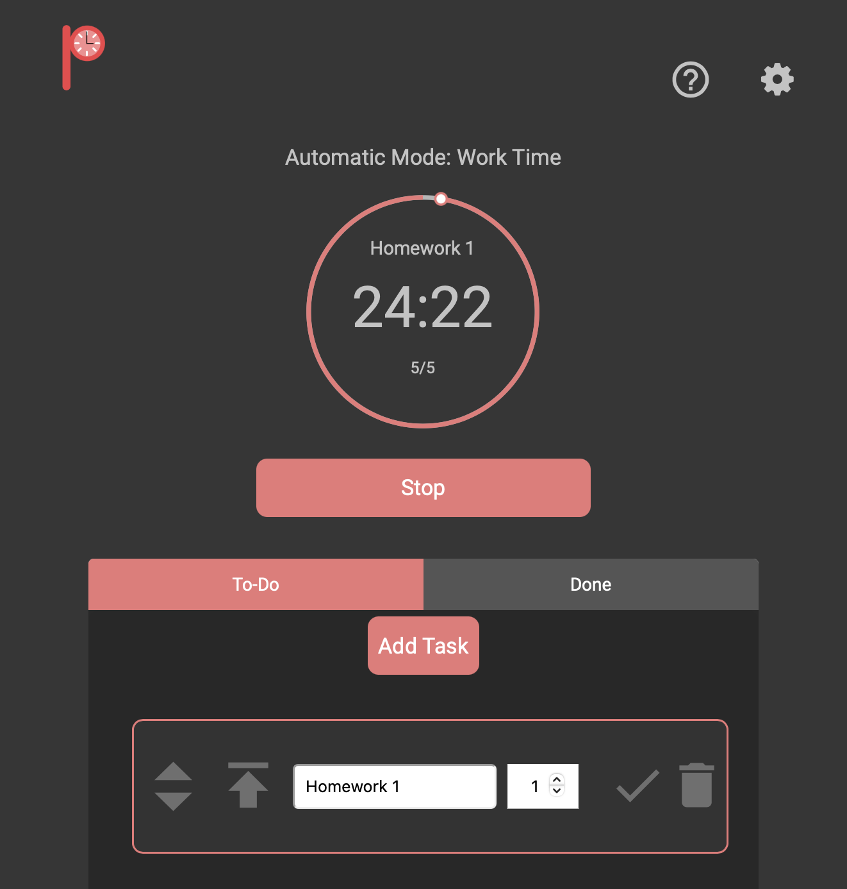

Projects & Experience
Projects
-

Pomodoro Timer Web App
Worked with a team in Winter 2021-Software Engineering class to develop an interactive Pomodoro Timer web app. Took on co-designer role. Worked on design process and implemented the interactive design using HTML, CSS, and JavaScript
Experience
-
Amazon
June 2022 - Sept 2022 | Software Development Engineer Intern
Developed a POC for a validation mechanism that verifies the validity of hazard risk warnings that appear for Amazon delivery drivers. Worked with Android Studio and AWS tools including AWS Lambda, DynamoDB, and SQS to develop feature and gain full-stack experience.